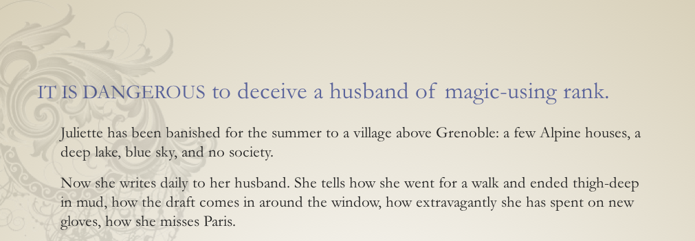

First Draft of the
Revolution
Discoverable narrative in digital works.
Liza Daly (Thanks!)

When I was 12,
I thought I was living in
the future of books.
One or more “interactive fiction” games dominated the software sales charts for almost a decade.

“You’re five hundred miles above a sea of ice, hurtling in profound silence over the Arctic atmosphere. Layers of crimson and violet describe the curve of the horizon, blending imperceptibly into a black sky crowded with stars.
You watch helplessly as the white door dwindles to a distant speck, vanishing at last between the horns of the rising moon.”


The interactive fiction game “Adventure” can be experienced in 187 billion trillion unique ways.
Mary Ann Buckles, Interactive Fiction as Literature 1987
The first graphical
web browser is introduced
Myst:
Click Here to Join
My Books in Browsers Web Ring!
The End of Books, Robert Coover, New York Times (1992)“Eloquence is being redefined. “Text” has lost its canonical certainty. How does one judge, analyze, write about a work that never reads the same way twice?”
“Hypertext fiction”

- Story-driven
- User-controlled
- Fun
Games
Art
- Mood-driven
- Author-controlled
- “Important”
Emily Short
Freelance consultant in
interactive narrative.
First Draft of the Revolution
Advance
Expand
“Presenting ‘First Draft’ through interactive letter-writing allows me to focus on the interpersonal dynamics at a very granular level. I’m really interested in problems of how people communicate – how they manipulate one another, how they assert control or social dominance, how they allow themselves to be vulnerable – and I want to show those interactions rather than telling them.” 
What has poetry to do with computer software? They share a great human myth or trope, an image that could be called the secret passage: the discovery of large, manifold channels through a small, ordinary-looking or all but invisible aperture.
The Muse in the Machine, Robert Pinsky, New York Times (1995)